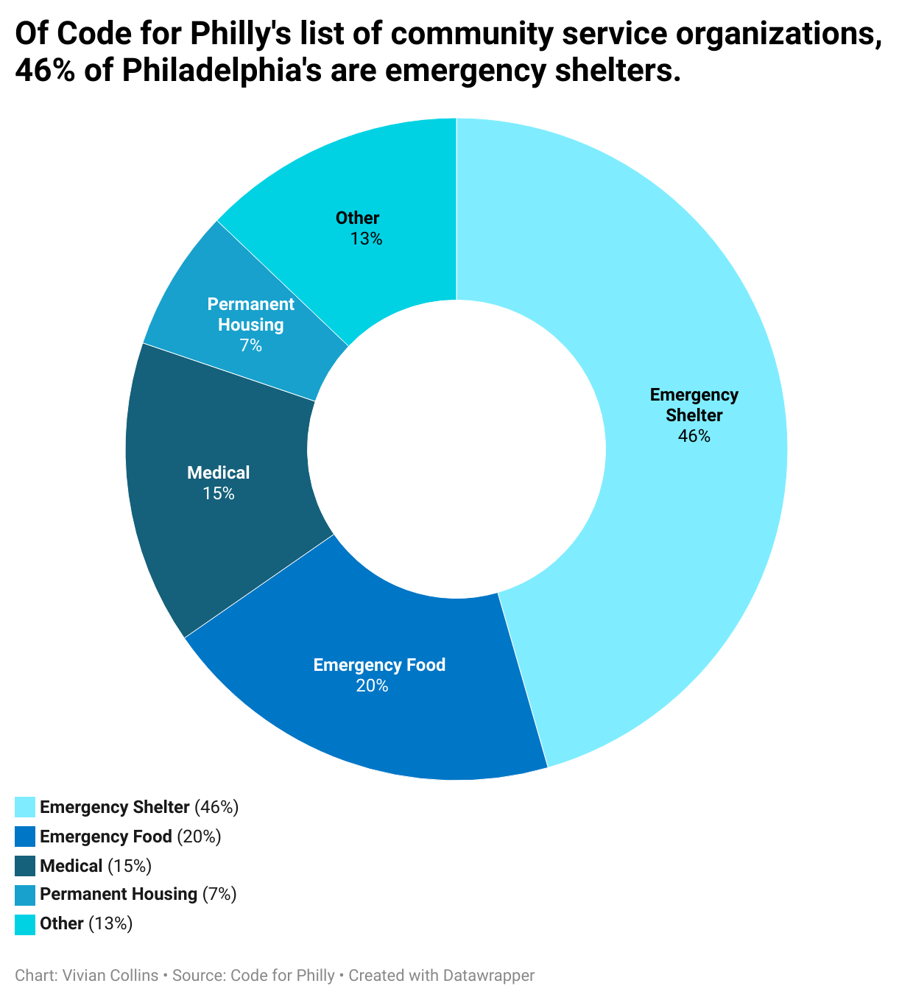
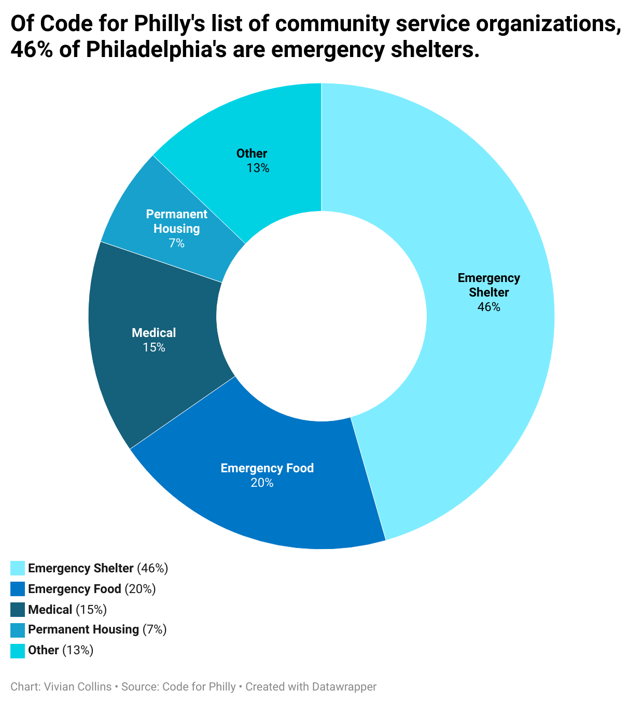

I chose to focus on this story because I am from Philadelphia and the city is very important to me. A major issue citizens in Philly face is access to community service resources and food. My dataviz presents a breakdown of the services availible in Philadelphia.
 

The feedback I got from my partner was to make the colors more distinguishable
I changed the color and structure of my chart.